Generated 2026-10-23T23:01:20.543437+00:00. Document producer finished. Simulation and analysis status are recorded with each figure; this page updates when rebuilt and has no timed refresh.
Integrated manuscript outline · Figures 1–4 with legends · Archived brief · Task prompt
Figure and legend · Complete supplement · Results and methods

A, Recorded Wave-pinning preparation cue at length 15: a finite left patch, withdrawn at 0.773 native time units. White to black is zero to peak input; coloured vertical lines mark the profile samples in B.
B, Native active profiles from the same preparation, scaled using the common minimum and span of the displayed snapshots. Colours identify recorded times.
C, Orientation from the same preparation. Grey marks basal verification after establishment arrival at about 116; the cue has already ended. The matched time scale in A and C separates input duration from autonomous development.
D, Three rightward finite challenges restart the identical qualifying nominal-amplitude, relative-20% basal checkpoint at each model and length: fixed physical support 3 (Spring 0.2 native length units), relative support 20%, and a linear ramp with constant physical slope. Patch peaks remain fixed within each model; a fixed-slope ramp has a larger peak in a longer domain. Goryachev patches use the independently selected, length-independent multiplier K=64 (peak 6.4), which makes this a response-permissive comparison rather than a calibrated equal biochemical dose across models.
E, Spearman rank correlation between length and the shortest tested passing pulse duration, separately for orientation replacement and strength replacement, across Wave-pinning, Goryachev, corrected deBelly, Holmes 3 and Spring. Each cell reports the correlation and included successful-length count. All audited scalar successes enter, including those failing the separate native-field tail criterion. At least four distinct successful lengths and nonconstant durations are required; censored and preparation-ineligible cases receive no invented time. The companion duration curves retain all lengths and field-status markers.
After each positive pulse, input returns to the native basal value for 10,000 native time units. Orientation requires all 201 final-500 samples to have scalar orientation above 0.05 and contrast at least 0.05, with orientation range below 0.005. Strength additionally requires every tail orientation to be within 1% of the absolute initial leftward scalar orientation; it does not compare individual pole heights or amounts. The separate native-field tail flag requires pointwise range and projected 500-unit drift within 0.1% of frozen field scales. The reported duration excludes preparation and recovery. It is the shortest passing tested duration, with sampled fail/pass boundaries refined to 1%; narrower unobserved intervals are not excluded.
deBelly uses independently commanded corrected endpoints, rather than the deprecated in-loop centered extension. Spring length and time retain native units and are not silently converted to micrometres or seconds. Model-specific axes and stimulus definitions prevent interpreting cross-model amplitudes or clocks as biologically calibrated equivalents.
Figure and legend · Complete supplement · Results and methods

Enlarged cells resist replacement through distinct initiation, cue-width and pulse-memory signatures.
A, Incumbent excess amount normalized to the model reference, across the same 97 retained states.
B, Incumbent extent normalized to the model reference, for those same states.
C, Incumbent peak normalized to the model reference, for those same states.
D, Initiation is the time from cue onset until maximum in-cue activity minus the profile minimum exceeds 10% of the model’s L19 incumbent excess peak. Area 1, width 3.8; times are normalized to L19. All six deBelly upper bounds are 0.5 native units (downward arrows); first-update sampling leaves its size dependence unresolved.
E, Replacement time (first eligible challenger share ≥ 0.75) versus length, with a line per width and rows for areas 0.5, 1 and 2. Upward triangles/arrows are lower bounds: the cue never replaced within the horizon (6,000 Wave-pinning; 10,000 Goryachev/Holmes; 2,000 deBelly; 100 Spring, native units). Broad cues rescue Holmes across all lengths; narrow-cue censoring does not establish a growing penalty. Spring native widths equal the displayed widths divided by 38.
F, Gap-1 activity kept versus pulse-2 gain as a fraction of headroom (Eq. 1). Four equal pulses, total ON 1.5 times the model-length commitment calibration; gaps 0–16 pulse durations. Holmes L31–39 uses the L27 calibration. Other models are grey; lightness indicates L. Open circles at x = 0 code activity below the existing visibility gate. At the left wall, deBelly/Spring gain on pulse 2 despite no visible activity; Goryachev never does. The deBelly L19/gap16 first-gap endpoint was checked against native fields.
G, L39 gap4 challenger-share histories, labelled kept / lost / lost then commits; shading marks cue ON. deBelly includes full recovery; others show one post-train pulse duration. Continuous raw shares include below-gate values. deBelly’s later timing and fields remain numerically sensitive (supplement).
H, Prospective biosensor histories for the same pulse train in WGD− and enlarged WGD+ cells. Initiation-limited resetting (Goryachev), saturating activation with gap retention (Wave-pinning/Holmes), and progress retained after activity loss (deBelly/Spring) give distinct dimensionless schematic histories.
I, Prospective equal-dose width responses for those classes: weak width rescue, strong width rescue, and weaker width rescue. Solid grey: WGD−; dashed black: WGD+. These are qualitative assay predictions.
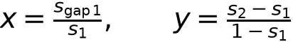
(1)s₁ and s₂ are challenger shares at pulse ends 1 and 2; s_gap1 is the first-gap-end share. An observed endpoint below the existing visibility gate is coded as zero visible share in F; its raw value remains in the CSV.
Figure and legend · Complete supplement · Results and methods
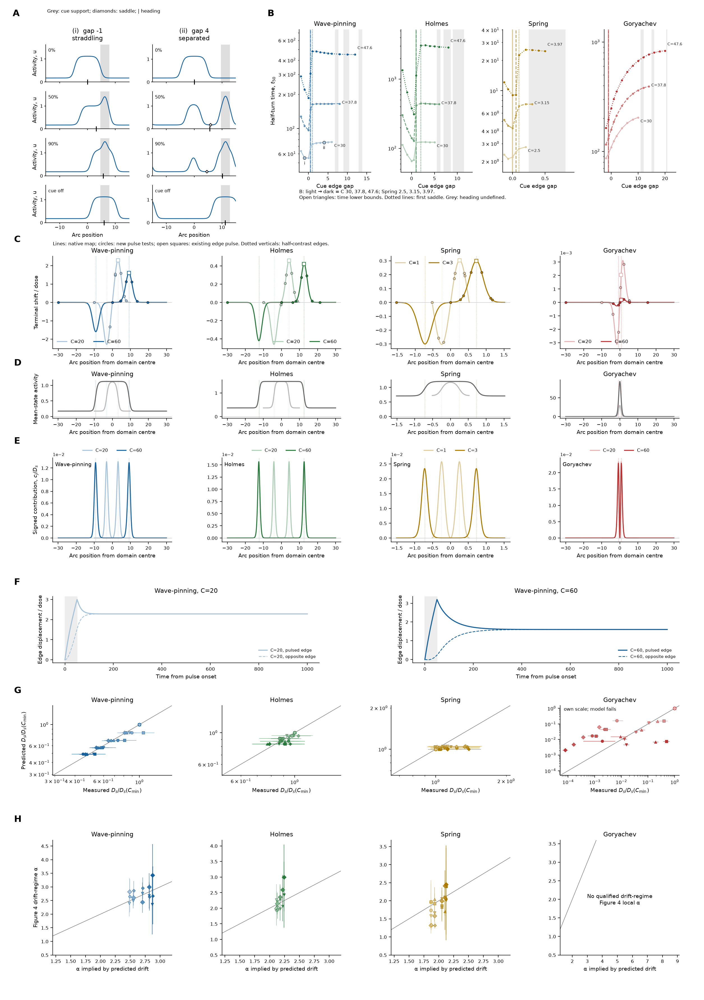
A. Wave-pinning activity profiles for a cue straddling the incumbent edge (i) or separated from it (ii), C=30. Rows show the initial state, half-turn, 90% turn and cue-free relaxation. Grey marks cue support, diamonds mark saddles and the black tick marks activity heading.
B. Enlargement slows half-turning through both incumbent sliding and replacement by a new region. Half-turn time is plotted against cue-edge gap for C=30, 37.8, 47.6 (Spring 2.5, 3.15, 3.97), light to dark. Vertical lines mark the first saddle at half-turn; grey marks undefined heading at one or more sizes. Open upward triangles with arrows denote time lower bounds.
C. Signed terminal displacement per dose for a Gaussian pulse centred at each arc position, at f=0.001: SD 1.5, duration 50 (Spring 0.15, 5). Light and dark are C20/C60 (Spring 1/3). Lines are the native linearized response to this pulse shape; circles are direct pulse tests and open squares mark the edge test. The edge pulse confirms the map locally; additional tests cover the domain centre, halfway to the edge, edge ±1 and ±3 pulse SD, quarter-basal arc and antipode. Maximum absolute gain error is 1.69% of map amplitude. The spatial response supplies the drift prediction in G.
D. Mean-state activity on the same centred physical arc coordinate as C and E. Dotted lines locate half-contrast edges. Spring uses material positions multiplied by mean circumference.
E. Nearly all predicted drift (99.6–100%) is generated within two input correlation lengths of the two edges, suggesting lateral-edge fluctuations as the cellular readout. Curves show signed per-position contributions divided by total predicted diffusion; negative values remain. Rounded shares per edge/plateau interior/basal arc (%) are: Wave-pinning C20: 50.0/<0.1/<0.1; Wave-pinning C60: 49.9/0.1/<0.1; Holmes C20: 50.0/<0.1/<0.1; Holmes C60: 50.0/<0.1/<0.1; Spring C1: 50.0/0/0; Spring C3: 49.8/0.2/0.2; Goryachev C20: 50.0/0/<0.1; Goryachev C60: 50.0/0/<0.1. Interior and basal zones exclude edge zones; exact signed fractions are supplied with the source data.
F. Wave-pinning C20 and C60: the pulsed edge (solid) and opposite edge (dashed) move together and retain a permanent shift after withdrawal. Grey marks pulse-on; displacement is divided by pulse dose. Largest/smallest terminal edge-gain folds are Wave-pinning 0.701, Holmes 0.914, Spring 0.989, Goryachev 0.088. Enlargement suppresses susceptibility strongly in Wave-pinning and Goryachev, while Holmes and Spring change little. Other time courses and integrated responses are supplementary.
G. A weak input anywhere shifts the domain by g(x) times dose; noise is many such inputs; drift follows from g and the input covariance; nothing is fitted. Shared-translation predicted versus measured diffusion is divided by each quantity's own smallest-size value at the same input (domain drift is also shown in Figure 4G). Grey is equality. Colours encode size; shapes encode f=0.0001, 0.0003, 0.001, 0.003, 0.005, 0.01 (circle, square, upward triangle, downward triangle, diamond, filled plus). Horizontal intervals are measured 95% bootstrap intervals. Wave-pinning's terminal gain fold gives 0.70²≈0.49; the full spatial covariance predicts 0.490, versus 0.473 measured at f=0.001. The square relation is approximate because spatial shape and covariance also change. Goryachev fails quantitatively and retains its own scale. Absolute diffusion and the independent-edge candidate are supplementary.
H. The drift prediction implies a local size exponent, compared with measured heading-persistence α from Figure 4E. Predictions use the exact mean input of every observation; no f=0.001 extrapolation is used. The drift subset requires f≤0.01 and multiple-domain fraction≤0.05 throughout the fixed size neighbourhood. Native stationary-state and pulse-linearity gates must also pass. Grey is equality; vertical intervals are observed 95% bootstrap intervals; colours and shapes match G. 53 qualified pairs include all 15 Wave-pinning observations at f=0.003, 0.005 and 0.01. Its predicted α spans 2.48–2.88, above the size-independent-drift expectation of 2. Goryachev has no qualified pair. Every excluded condition and reason remains in the source data.
At the right edge, last tested linear peak amplitudes from the smallest to largest size are Wave-pinning 0.01024→0.00512 (0.5-fold), Holmes 0.0256→0.0256 (1-fold), Spring 0.0512→0.0512 (1-fold), and Goryachev 0.16384→0.65536 (4-fold). The next doubling exceeds 10% gain departure. Full brackets, all-size response curves and fixed-dose duration tests are in the methods and supplement.
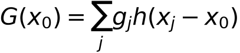
(3.1)The main map is the standard Gaussian-pulse response per dose, not raw cell-input g.
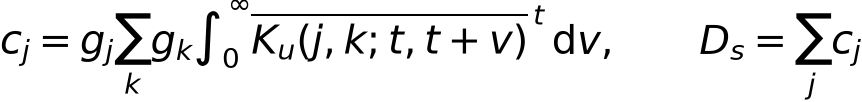
(3.2)Signed per-position contributions retain the exact native input covariance.
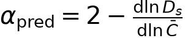
(3.3)Same fixed adjacent-size neighborhoods as Figure 4E; exact matched-input predictions and explicit drift-regime eligibility.
Figure and legend · Complete supplement · Results and methods
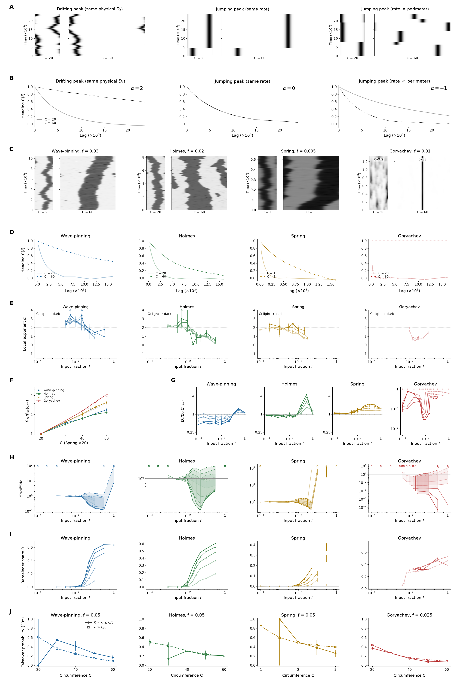
Model panels use positive lognormal input with mean f times the native reference: Wave-pinning 0.1, Holmes 1, Spring 4 and Goryachev 6.4. The Gaussian driving field has unit variance, lognormal amplitude σ = 1, spatial parameter 1.5 and OU correlation time 50 (Spring basal-physical 0.15 and 5). Spring input is stationary in material coordinate, so its physical correlation length scales with circumference. Native clocks are not calibrated between models. Unless stated otherwise, error bars are 95% whole-history bootstrap intervals.
A, Detector-free null kymographs at C = 20 and 60: identical physical diffusion, size-independent jumping, or perimeter-proportional jumping. Each facet shows the same activity measure.
B, Null heading autocorrelation; persistence size exponents are 2, 0 and −1. C = 20 is light and C = 60 dark.
C, Native-model kymographs at f = 0.03 (Wave-pinning), 0.02 (Holmes), 0.005 (Spring) and 0.01 (Goryachev). Arc position is centred at the initial heading; time is elapsed after burn-in. Goryachev activity ranges are labelled separately for each size.
D, Model heading autocorrelation at the inputs in C, for the smallest and largest rings (Spring C = 1 and 3). Solid curves show the smallest ring and dotted curves the largest. Endpoint eligibility requires polarity coherence |P| ≥ 0.1. These direct curves show longer heading memory in larger rings.
E, Local persistence exponent α versus input fraction f, using three neighbouring sizes (two at endpoints), with whole-history 95% intervals. In E and G–I, sizes are C = 20, 30, 40, 50 and 60 (Spring 1, 1.5, 2, 2.5 and 3), light to dark. Open circles in D, E, G and I mark the declared combined forcing-control flags; unavailable rates are omitted.
F, Noise-tolerance fold at heading-correlation lag 2000 (Spring 200), relative to the smallest ring. Spring circumference is multiplied by 20 for display. The dashed grey guide is proportional to circumference.
G, Physical within-tenure drift coefficient normalized by the smallest size at the same input, using five-frame persistent dominant tenures. Goryachev uses a different ordinate range, 10⁻⁷–2; the other models use 0.2–8.
H, Drift plus counted five-frame-dominant takeovers, divided by observed heading decorrelation rate, at every designed input. Solid lower and dashed upper limits bound every unscored takeover loss between 0 and 2. Shading denotes identification intervals, not confidence intervals. Grey line: unity. Open upward triangles with arrows mark an unbounded upper limit where drift is unavailable. Only the unknown drift contribution has lower bound zero; counted-takeover lower contributions are retained. Crosses at the top mark unavailable observed rates.
I, Signed remainder share versus input, using point regions with native-amplitude scaling. It includes amplitude, within-region shape, unresolved activity and background contributions. The decomposition is descriptive; exact own-mask and normalization checks are supplementary.
J, Probability that a certified persistent secondary birth becomes globally dominant within 20 input correlation times. Filled circles: 0 < d ≤ C/6; open squares: d > C/6. Wave-pinning f = 0.05, minimum total births = 590; Holmes f = 0.05, minimum total births = 231; Spring f = 0.05, minimum total births = 580; Goryachev f = 0.025, minimum total births = 1064. For each model, select the designed input nearest in log distance to the smallest ring’s half-memory input among inputs with at least 200 total certified births at every size, then drop d ≤ 0. d denotes estimated edge-to-edge birth–incumbent separation, using the amount/global-contrast plateau-width approximation. Intervals resample whole histories 2000 times; [0,1] replaces intervals with fewer than 97.5% defined resamples. Positive-distance denominators and certification are reported separately. Lower 20-time-scale incidence can reflect slower or rarer takeover; lifetime takeover probability is unidentified.
The strong-input regime remains unexplained as a common four-model description. Rate-collapse screens pass in Wave-pinning, Holmes, Spring, Goryachev; local-slope screens pass in Wave-pinning, Holmes, Spring. This partial agreement depends on the local-slope stencil: Wave-pinning and Spring fail the three-point slope screen, so it does not establish a robust strong-regime explanation. Fourier-mode tests (K–L), spectra and exact-mask diagnostics appear in the supplement.
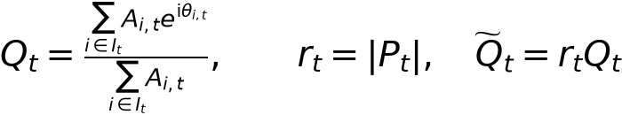
(4.1)Q is the normalized point-region moment; P=M₁/M₀ is measured from the native field. Its amplitude r prevents the unit-modulus single-region normalization artefact.
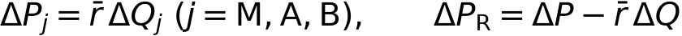
(4.2)The three ΔQ components use the symmetric Shapley convention for motion, coexisting amount and membership; r̄ is mean endpoint native amplitude. R closes the native moment change and includes amplitude variation, shape and background. This is an accounting convention, not causal attribution.
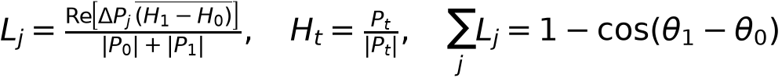
(4.3)Pooled signed fractions are sums of L_j divided by total measured heading loss. They retain cancellation, can exceed one, and depend on the stated accounting convention; they are not causal shares.
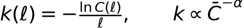
(4.4)C(ℓ) is activity-heading autocorrelation; mean C is actual circumference. Endpoint eligibility uses |P|≥0.1. Main H evaluates every designed input; unavailable observed rates remain explicit.
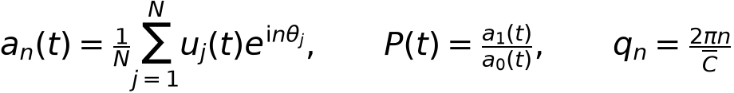
(4.5)Fourier modes use cell-centre material phases and the positive convention matching the native first moment. Heading is the phase of P; Spring physical wavenumber uses mean circumference.
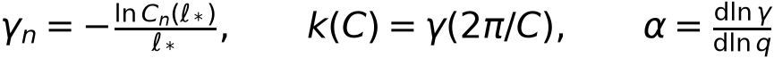
(4.6)The last two equalities are the detector-free hypothesis under a common size-independent mode curve, not an identity assumed in analysis. Complex correlations use the nearest-half lag rule. Half-crossing status is exported; primary collapse and slope comparisons use observed crossings. The declared descriptive screens and stencil sensitivities are reported model by model.
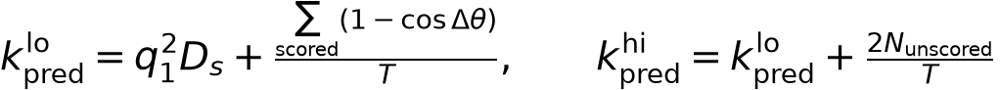
(4.7)All counted takeovers enter the interval: each unscored angular loss lies between 0 and 2. T is eligible exposure. Missing drift has a nonnegative lower bound and unbounded upper limit; an unavailable observed heading rate prevents a numerical ratio.
Claude review 1, preserved verbatim · Point-by-point response